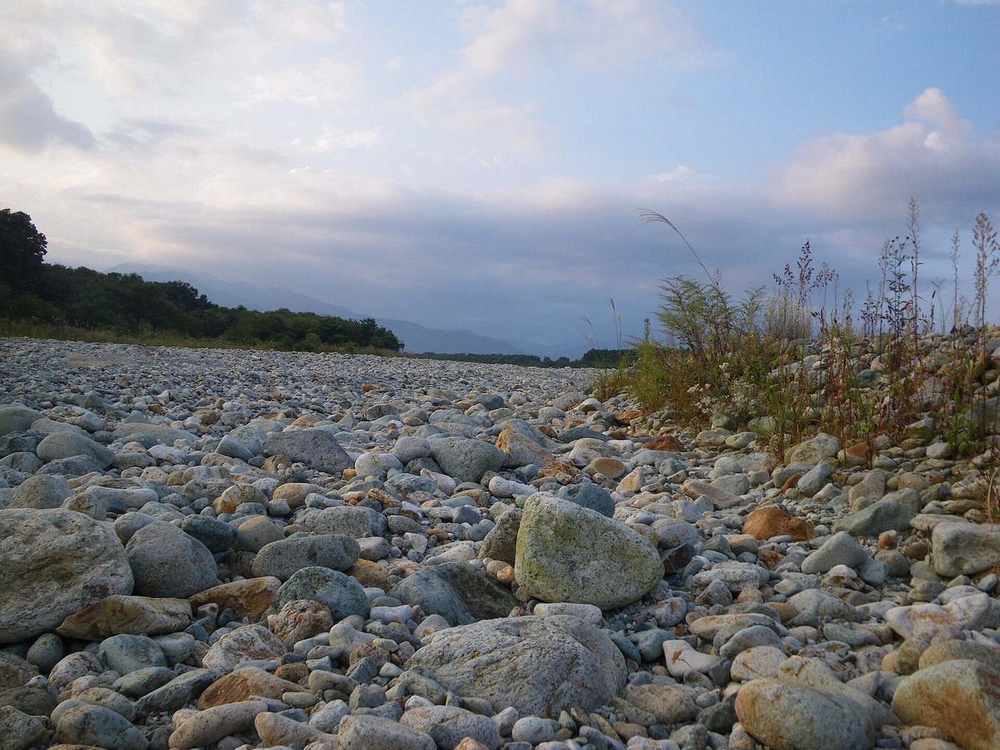

Access
お店の場所
| 所在地 | 〒923-0867 石川県小松市幸町1丁目33-2 スタチオネ 1F-2 |
|---|---|
| 電話 | 0761-48-7090 |
| 営業時間 | 準備中 |
| 定休日 | 準備中 |
| 駐車場 | 準備中 |
| @la_foce_1332 |

小松駅の近く、ビル「スタチオネ」内です。お越しの前に、営業時間などをお電話でご確認ください。
小松駅に近い、ビル「スタチオネ」の1階です。
| 所在地 | 〒923-0867 石川県小松市幸町1丁目33-2 スタチオネ 1F-2 |
|---|---|
| 電話 | 0761-48-7090 |
| 営業時間 | 準備中 |
| 定休日 | 準備中 |
| 駐車場 | 準備中 |
| @la_foce_1332 |

小松駅の近く、ビル「スタチオネ」内です。お越しの前に、営業時間などをお電話でご確認ください。